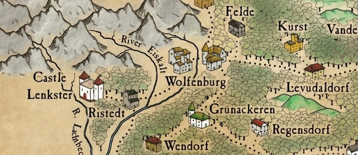
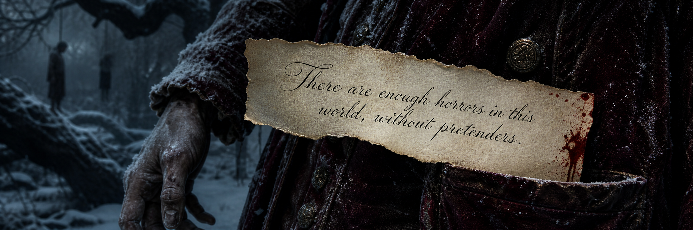

Well, the nights are drawing in, and the days are sure as stone getting colder. Why, I’ve had to send some of the lads down the mountain to gather more timber for the watchfires to save them icing right to the ground. Much to my surprise, Saltzpyre went with ‘em. Then again, I suppose if anyone has an eye for good kindling, it’s a witch hunter.
夜是越拖越长，天也一天冷过一天。这不，我只好打发几个弟兄下山多弄些柴，把守夜的火堆烧旺点，省得大伙儿原地冻成冰雕，没想到萨尔茨皮雷也跟着去了。转念一想，要说谁能一眼就挑中引火的好柴，那还真得是咱这位独眼猎巫人。
Puts me in mind of a time from my mercenary days, back over in Bluchendorf. Coldest winter on record. Priest froze to his pulpit, and if there was an hour’s worth of light in the sky before the storms closed in, you were doing well. On top of that, we started getting reports of ghastly spirits on the road, attacking those few travellers who dared brave the weather. No laughing matter, because food was running short and the village was reliant on caravans from outside.
这让我想起了我当佣兵时的一段往事。那是布鲁亨多夫有史以来最冷的冬天，冷得牧师直接冻死在布道坛上；暴风雪来临前，天上能有个把钟头的光亮，就算是难得的好光景了。
更要命的是，我们开始收到报告说路上有幽灵攻击那些为数不多敢于在这种天气出门的旅行者。不开玩笑，因为食物短缺，村子里的人都依赖外面的商队。
Luckily for them, me and some of the lads were up for a bit of ghost hunting. Not gladly, mind. I know plenty of folk think otherworldly spirits are just stuff and nonsense, but when you see the state of Sylvania you look at things a bit different. Some of the stories came complete with reports of bodies drained of blood and left hanging in the trees – one survivor even came raving a tale about the ‘Old Baron of Bluchendorf’ and his terrible, bloody fangs. So it seemed we had the choice of starving to death or becoming something else’s lunch.
算他们走运吧，我打算带一些弟兄去会会那帮幽灵，别以为我乐意去。很多人认为鬼神之说纯属扯淡，那帮人是没见过希尔瓦尼亚的状况，传闻里可说得有板有眼：那些被吸干血的尸体挂在树上，有个幸存者还嚷嚷着什么见到了“布鲁亨多夫的老男爵”和他那对血淋淋的恐怖獠牙。
所以，要么被饿死，要么被吃掉，你猜我们怎么选？
So me and Schepke, we took a group of folks went looking for whatever it was causing the mischief. Unfortunately, between the blizzard, the trees and what I can only describe as a really bloody poor sense of direction, we wandered in circles for six days, never once catching sight of our quarry.
于是，我和谢普克带着弟兄们去找那些玩意儿。结果倒了血霉，我们穿过暴风雪，还有树树树树树树！再加上我只能称之为操蛋的方向感，我们兜了整整六天圈子，毛都没找到。
Pretty soon we were all jumpy and foul-tempered, and that only got worse when young Hans froze to death. Couple of the lads wanted to eat him – not like something else wasn’t gonna, I guess – but that sort of thing’s never sat well with me, so I gave ‘em a clout to knock some sense back into their heads.
很快，我们都开始神经兮兮，脾气一点就着。尤其是小汉斯被冻死后就更糟了，有几个家伙竟然想吃他的尸体！并不是说那些玩意儿就不会吃小汉斯的尸体，但人吃人这种事老子受不了，所以我揍了他们一顿，好让他们理智一点。
Then, on the seventh day, we woke shivering and starving to find ourselves surrounded by what, at first, seemed to be the same ghastly apparitions we’d been seeking. And so they were, sort of. You see, our mystery assailants were nothing more than a bunch of deserters, dressed in pale rags coated with glowing shellfish juices to really sell the idea. The so-called ‘Old Baron’ was the exception. Dressed up in what he probably thought was the spitting image of a Sylvanian Count, though what self-respecting bloodsucker hangs about in a Hochland forest in a velvet suit – complete with flowing cape – I’ve no idea. Snags something terrible, it does. And did.
到了第七天，当我们从颤抖和饥饿中醒来，发现自己被我们一直在寻找的那些“幽灵”包围了。至少看上去是那么回事：我们的神秘袭击者充其量也就是一群逃兵，他们披着的苍白色的破布，布上涂着发光的贝类汁液来装神弄鬼。
那个所谓的“老男爵”倒是“鹤立鸡群”——他把自己打扮成想象中希尔瓦尼亚吸血鬼伯爵的样子：一身天鹅绒外套，还披着一件飘逸的披风。问题是，有哪个自重的吸血鬼会穿成这样在霍克领的森林里溜达？指不定就挂在哪根东南枝上了，是的，也确实挂住了。
Seems this lot had come marching down out of Ostland, where they’d played this particular game to great effect on the Wolfenburg-Levudaldorf road. If folk think there’s a bunch of cut-throats on the prowl, well they send out the militia, don’t they? But if they think there’s something supernatural at work, they’re a bit less keen to take action, ain’t they? All that ‘blood-drained corpses’ bit was just another way to sell the myth, though I don’t imagine it mattered to the corpses themselves.
这群人可能是从奥斯特领过来的，他们从沃尔夫堡到莱沃达多夫的路上一定没少玩这种把戏，而且成效卓著。
想想吧，如果人们认为有一群暴徒在四处游荡，那就会派出民兵，对吧？但如果他们认为有超自然的力量在起作用，他们就会怂……合理吧？至于那些“被吸干血的尸体”不过是装神弄鬼的另一种方式，至于尸体本身，我觉得无关紧要。

Anyway, we’d come out looking for ghosts, and found a bunch of aspirational ne’er do wells. Not normally a problem – though I didn’t have my magic sword in those days, we were still a capable bunch. When warm. And fed.
总而言之，我们去找幽灵，却找到了一群“志存千里”的逃兵。这本来是手拿把掐的事儿。尽管那会儿我还没有魔法剑，但我们还是很能打。唔……要是当时能吃饱……还有穿暖的话。
As it was, we were lucky to get away. Plenty of us didn’t. The rest crawled back into Bluchendorf half-dead, and smarting for revenge. Happily, by the time I could hold a sword, a company of Hochlander huntsmen had arrived in the village. During the next lull in the storm, we went back out mob-handed with murder in our hearts.
万幸的是，我们逃了出来，可不少弟兄没这个运气。我们半死不活地爬回布鲁亨多夫后，誓要为弟兄们复仇。好在等我重新握得住剑时，一队霍克领猎人也赶到了村里。趁暴风雪再次停歇，我们摇齐了人，嗷嗷地又杀了回去。
Only … we never found the deserters. Or rather, we did, but not quite how we wanted. As night fell, we found a whole mess of blood-drained bodies, hanging from the trees. Horrid little upside-down forest beneath the forest, the branches hung heavy with flesh too cold to rot. Our ‘ghosts’ done unto by unknown hands as they’d been doing unto others themselves.
只是……我们没找到那帮逃兵。或者说我们找到了，却不是以我们想要的方式。
当夜幕降临时，我们来到一片林子，林子里挂满了被吸干血的干尸，他们被这鬼天气冻得梆硬，都没法腐烂，一根根悬在那儿像一片倒置的森林。我们的“幽灵”被无名之手如法炮制——死法正是他们对别人做的那样。
The so-called ‘Old Baron’ was with them. Right at the heart of the carnage, in fact, hanging from the branches of a twisted old yew, throat ripped open and that ridiculous cloak gone. Had a scrap of paper in his breast pocket, and on it a message written in a beautiful copperplate hand. I can still see it, clear as day.
“老男爵”也在其中，就吊在这片惨状正中央的一棵歪脖子老紫杉树上。他的喉咙被撕开，那件可笑的斗篷也不见了。他胸前的口袋里塞着一张纸条，上面用漂亮的花体字写着一句话。直到今天，那行字依然历历在目：

I don’t know why I looked behind me at that moment, but I did. And there she was, standing framed against the trees, the Baron’s cloak wrapped tight about white dress, and a mocking finger pressed to bloody lips, urging me to silence. And then she was gone, leaving me croaking for help. No one else had caught a glimpse, or so they said.
那一刻，我神差鬼使地看了眼身后，她就在那里，如同嵌在林木之间的阴影，男爵的斗篷紧紧地裹着她的白裙。她竖起一根手指，嘲弄地抵在血淋淋的唇上，示意我别出声。下一秒，她就不见了，只留下我嘶声力竭的呼救声，但弟兄们都坚称没看到什么女人。